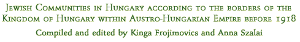

The list includes a total of 803 Jewish communities: 521
main communities and 282 smaller communities
To order more information on specific communities please send us your Search Order ONLINE and we will process your request.

Appendix to the Decree No. 1885/1924 of the Minister of Education and Religious Affairs (Report On the Centers and Territories of the Districts Defined According to the Israelite Registers of Birth, Death and Marriages)
Jewish Administrative Calendar for the Year 5650, 1889/1890.
Jewish Communities (in total: 803)
Main Jewish Communities (in total: 521)
Minor Jewish Communities (filiae, in total:
282)
Communities underlined appear in the Database of Beth Hatefutsoth. You
may order additional information by sending us a Search Order ONLINE.
N - Neolog Communities
O - Orthodox Communities
S - Status quo ante Communities
[ ] a. Previous name of the place
b. Recent name of the place into which previously independent settlements had been incorporated.
c. Places that now are not within the borders of Hungary (after 1918) are identified by the recent name of the settlement and the region they belong to.
( ) - Names of the Counties are listed according to the administrative boundaries
during the period of the Austro-Hungarian Empire.
| Name of the region | Now part of |
| Burgenland | Austria |
| Carpatho-Russia | Ukraine |
| Slovakia | Slovak Republic |
| Transylvania | Romania |
| Vojvodina | Yugoslavia |
Abádszalók [Tiszaszalók] (Jász-Nagykun-Szolnok)
Abaújszina [Seňa, Slovakia] (Abaúj-Torna) O
Abony (Pest-Pilis-Solt-Kiskun) N
Ada [Ada, Vojvodina] (Bács-Bodrog) O
Ádánd (Somogy) N
Albertirsa [Alberti and Irsa] (Pest-Pilis-Solt-Kiskun) S
Algyógy [now part of Geoagiu, Transylvania] (Hunyad)
Alistál [now part of Dolný Štál, Slovakia] (Pozsony) O
Alsódabas [now part of Dabas] (Pest-Pilis-Solt-Kiskun) N
Alsókálinfalva [Kalini, Carpatho-Russia] (Máramaros)
Alsókalocsa [Kolocava, Carpatho-Russia] (Máramaros)
Alsókubin [Dolný Kubín, Slovakia] (Árva) S
Alsólendva [Lendava, Vojvodina] (Zala) N
Alsónémedi (Pest-Pilis-Solt-Kiskun)
Alsórétfalu [Lúky, Slovakia] (Trencsén) N
Alsószopor [Supuru de Jos, Transylvania] (Szilágy)
Alsóverecke [Nyizsnyije Vorota, Carpatho-Russia] (Bereg) O
Apatin [Apatin, Vojvodina] (Bács-Bodrog)
Apostag (Pest-Pilis-Solt-Kiskun) N
Arad [Arad, Transylvania] (Arad) N
Aranyosmarót [Zlaté Moravce, Slovakia] (Bars) N
Aranyosmeggyes [Medieşu Aurit, Transylvania] (Szatmár) O
Aszód (Pest-Pilis-Solt-Kiskun) N
Avasfelsőfalu [Negreşti-Oaş, Transylvania] (Szatmár) O
Bácsalmás [Almás] (Bács-Bodrog) S
Bácsföldvár [Tiszaföldvár, Bačko Gradište, Vojvodina] (Bács-Bodrog) N
Baktalórántháza [Bakta and Lórántháza] (Szabolcs)
Balatonfőkajár (Veszprém) N
Bálinc [Balinţ, Transylvania] (Krassó-Szörény)
Bán [Banovce nad Debravou, Slovakia] (Trencsén) O
Bánffyhunyad [Huedin, Transylvania] (Kolozs) O
Bánhida [now part of Tatabánya] (Komárom)
Barcánfalva [Bîrsana, Transylvania] (Máramaros)
Bárdfalva [Berbeşti, Transylvania] (Máramaros) O
Bártfa [Bardejov, Slovakia] (Sáros) O
Bátaszék [Báttaszék] (Tolna) N
Bátorkeszi [Vojnice, Slovakia] (Esztergom) O
Bazin [Pezinok, Slovakia] (Pozsony) O
Beckó [Beckov, Slovakia] (Trencsén) S
Bedőháza [Bedevlja, Carpatho-Russia] (Máramaros)
Békásmegyer [now part of Budapest] (Pest-Pilis-Solt-Kiskun)
Bél [Beliu, Transylvania] (Bihar) S
Belatinc [Beltinci, Vojvodina] (Zala) N
Belényes [Beiuş, Transylvania] (Bihar) O
Benedeki [Benedikovci, Carpatho-Russia] (Bereg) O
Beregszász [Beregovo, Carpatho-Russia] (Bereg) O
Berekböszörmény [Böszörmény] (Hajdú)
Berezna [Berezovoje, Carpatho-Russia] (Máramaros)
Berezó [Brezová pod Bradlom, Slovakia] (Nyitra) O
Berzevice [Brezovica nad Torysou, Slovakia] (Sáros) O
Beszterce [Bistriţa, Transylvania] (Beszterce-Naszód) O
Besztercebánya [Banská Bystrica, Slovakia] (Zólyom) N
Bethlen [Beclean, Transylvania] (Szolnok-Doboka) O
Bezdán [Bezdan, Vojvodina] (Bács-Bodrog) N
Biharkeresztes [Mező-Keresztes] (Bihar)
Biharnagybajom [Nagybajom] (Bihar) N
Bilke [Belki, Carpatho-Russia] (Bereg) O
Boldogasszony [Frauenkirchen, Burgenland] (Moson) O
Bolesó [Bolešov, Slovakia] (Trencsén) N
Bolyok [now part of Ózd] (Borsod) O
Borosjenő [Ineu, Transylvania] (Arad)
Borsa [Borşa, Transylvania] (Máramaros) O
Bosácz [Bošáca, Slovakia] (Trencsén) O
Bözödújfalu [Bezidnou, Transylvania] (Udvarhely) O
Brassó [Braşov, Transylvania] (Brassó) N, O
Breznóbánya [Brezno, Slovakia] (Zólyom) N
Brusztura [Lopuhov, Carpatho-Russia] (Máramaros)
Budafok [now part of Budapest] (Pest-Pilis-Solt-Kiskun)
Bugyi (Pest-Pilis-Solt-Kiskun)
Bustyaháza [Bustina, Carpatho-Russia] (Máramaros)
Buziásfürdő [Buziaş, Transylvania] (Temes) N
Cegléd (Pest-Pilis-Solt-Kiskun) N
Csaca [Čadca, Slovakia] (Trencsén) N
Csákigorbó [Gîrbou, Transylvania] (Szolnok-Doboka) O
Csáktornya [Čakovec, Vojvodina] (Zala) N
Csap [Tsop, Carpatho-Russia] (Ung) O
Csécse (Nógrád) O
Csércs [Čirč, Slovakia] (Sáros) O
Cseszte [Častá, Slovakia] (Pozsony) O
Csömör (Pest-Pilis-Solt-Kiskun)
Csúz [Dubník, Slovakia] (Komárom) O
Dárda [Darda, Vojvodina] (Baranya) N
Dés [Dej, Transylvania] (Szolnok-Doboka) O
Déva [Deva, Transylvania] (Hunyad) N
Dévaványa (Jász-Nagykun-Szolnok) O
Dicsőszentmárton [Tîrnăveni, Transylvania] (Kis-Küküllő) O
Diósgyőr [now part of Miskolc] (Borsod) O
Dobsina [Dobšiná, Slovakia] (Gömör-Kishont)
Dolha [Dolgoje, Carpatho-Russia] (Máramaros)
Dragomérfalva [Dragomireşti, Transylvania] (Máramaros)
Drétoma [Drietoma, Slovakia] (Trencsén) S
Dunaharaszti [Haraszti] (Pest-Pilis-Solt-Kiskun)
Dunapataj (Pest-Pilis-Solt-Kiskun) N
Dunaszerdahely [Dunajská Streda, Slovakia] (Pozsony) O
Dunaújváros [Dunapentele] (Fejér) S
Dunavecse (Pest-Pilis-Solt-Kiskun)
Élesd [Aleşd, Transylvania] (Bihar) O
Eperjes [Prešov, Slovakia] (Sáros) O, N
Erdőd [Ardud, Transylvania] (Szatmár) O
Érmihályfalva [Valea lui Mihai, Transylvania] (Bihar) O
Érsekújvár [Nové Zamky, Slovakia] (Nyitra) O, N
Facsád [Făget, Transylvania] (Krassó-Szörény) N
Fegyvernek (Jász-Nagykun-Szolnok) O
Fehértemplom [Bela Crkva, Vojvodina] (Temes)
Felsőábrány (Borsod) O
Felsőapsa [Verhneje Vodanoje, Carpatho-Russia] (Máramaros)
Felsőgalla [now part of Tatabánya] (Esztergom)
Felsõvisó [Vişeu de Sus, Transylvania] (Máramaros) O
Felsővízköz [Svidník, Slovakia] (Sáros) O
Fertőszentmiklós [Rábaszentmiklós] (Győr)
Fogaras [Făgăraş, Transylvania] (Fogaras) N
Fülek [Fiľakovo, Slovakia] (Nógrád) O
Fülöpszállás (Pest-Pilis-Solt-Kiskun)
Gács [Halič, Slovakia] (Nógrád)
Galánta [Galanta, Slovakia] (Pozsony) O
Galgóc [Hlohovec, Slovakia] (Nyitra) O
Gálszécs [Sečovce, Slovakia] (Zemplén) O
Gánya [Ganitsi, Carpatho-Russia] (Máramaros)
Garamszentkereszt [Barsszentkereszt, Žiar nad Hronom, Slovakia] (Bars) S
Gávavencsellő [Gáva and Ó-Vencsellő] (Szabolcs) O
Gergelyiugornya [now part of Vásárosnamény] (Bereg)
Gernyés [Kopasnevo, Carpatho-Russia] (Máramaros)
Girált [Giraltovce, Slovakia] (Sáros)
Gödöllő (Pest-Pilis-Solt-Kiskun) N
Gölnicbánya [Gelnica, Slovakia] (Szepes)
Gyalu [Gilău, Transylvania] (Kolozs) O
Gyergyótölgyes [Tulgheş, Transylvania] (Csík) O
Gyertyánliget [Kobileckaja Poljana, Carpatho-Russia] (Máramaros)
Gyomaendrőd [Gyoma and Endrőd] (Békés) S
Gyón [now part of Dabas] (Pest-Pilis-Solt-Kiskun)
Győrszentmárton [Pannonhalma] (Győr) O
Győrsziget [now part of Győr] (Győr) O, N
Gyulafehérvár [Alba Iulia, Transylvania] (Alsó-Fehér) O
Hagyárosbörönd [Hagyáros] (Zala)
Hajdúhadház [Hadház] (Hajdú) O
Halmi [Halmeu, Transylvania] (Ugocsa) O
Hátszeg [Haţeg, Transylvania] (Hunyad) O
Hegyi [Kopčany, Slovakia] (Zemplén)
Hejőcsaba [Csaba; now part of Miskolc] (Borsod) O
Hernádzsadány [Zsadány, Ždaňa, Slovakia] (Abaúj-Torna) O
Héthárs [Lipany, Slovakia] (Sáros) O
Hidalmás [Hida, Transylvania] (Kolozs) O
Holics [Holíč, Slovakia] (Nyitra) S
Homonna [Humenné, Slovakia] (Zemplén) O
Hosszúaszó [Valea Lungă, Transylvania] (Kis-Küküllő) O
Hunfalva [Huncovce, Slovakia] (Szepes) O
Huszt [Hust, Carpatho-Russia] (Máramaros) O
Igló [Spišská Nová Ves, Slovakia] (Szepes) S
Illava [Ilava, Slovakia] (Trencsén) O
Ipolyság [Šahy, Slovakia] (Hont) O, S
Isaszeg (Pest-Pilis-Solt-Kiskun)
Iszka [Izki, Carpatho-Russia] (Máramaros)
Izsák (Pest-Pilis-Solt-Kiskun) N
Jablánc [Jablonica, Slovakia] (Nyitra) S
Jászalsószentgyörgy (Jász-Nagykun-Szolnok)
Jászapáti (Jász-Nagykun-Szolnok)
Jászárokszállás [Árokszállás] (Jász-Nagykun-Szolnok) N
Jászberény (Jász-Nagykun-Szolnok) N
Jászfényszaru (Jász-Nagykun-Szolnok)
Jászkarajenő (Pest-Pilis-Solt-Kiskun)
Jászkisér (Jász-Nagykun-Szolnok)
Jászladány (Jász-Nagykun-Szolnok)
Jóka [Jelka, Slovakia] (Pozsony) O
Jolsva [Jelšava, Slovakia] (Gömör-Kishont) O
Kabold [Kobersdorf, Burgenland] (Sopron) O
Kajászószentpéter (Fejér) N
Kalocsa (Pest-Pilis-Solt-Kiskun) N
Kapi [Kapušany, Slovakia] (Sáros)
Kapolcs (Zala) N
Karánsebes [Caransebeş, Transylvania] (Krassó-Szörény) N
Karcag (Jász-Nagykun-Szolnok) O
Kassa [Košice, Slovakia] (Abaúj-Torna) O, N
Kecel (Pest-Pilis-Solt-Kiskun)
Kecskemét (Pest-Pilis-Solt-Kiskun) O, N
Kerecke [Kerecki, Carpatho-Russia] (Máramaros)
Keselymező [Koselovo, Carpatho-Russia] (Máramaros)
Késmárk [Kežmarok, Slovakia] (Szepes) O
Királyháza [Korolevo, Carpatho-Russia] (Ugocsa)
Királyhelmec [Kráľovský Chlmec, Slovakia] (Zemplén) O
Kiskirva [Belovarci, Carpatho-Russia] (Máramaros)
Kiskőrös (Pest-Pilis-Solt-Kiskun) O
Kiskunfélegyháza (Pest-Pilis-Solt-Kiskun) O, N
Kiskunhalas (Pest-Pilis-Solt-Kiskun) O
Kiskunmajsa (Pest-Pilis-Solt-Kiskun)
Kiskurima [Kurima, Kurimka, Slovakia] (Sáros) O
Kismarton [Eisenstadt, Burgenland] (Sopron) O
Kispest [now part of Budapest] (Pest-Pilis-Solt-Kiskun)
Kissalló [Mezőkissalló, Tekovské Lužianky, Slovakia] (Bars) S
Kisszeben [Sabinov, Slovakia] (Sáros) O
Kistarcsa (Pest-Pilis-Solt-Kiskun)
Kisterenye [now part of Bátonyterenye] (Nógrád)
Kisújszállás (Jász-Nagykun-Szolnok) N
Kiszucaújhely [Kysucké Nové Mesto, Slovakia] (Trencsén) N
Kőbánya [now part of Budapest] (Pest-Pilis-Solt-Kiskun)
Kolozsvár [Klausenburg, Cluj, Transylvania] (Kolozs) N, O
Kolta [Kolta, Slovakia] (Komárom) O
Komárom [Komárno, Slovakia] (Komárom) O, N
Köpcsény [Kittsee, Burgenland] (Moson) O
Körmöcbánya [Kremnica, Slovakia] (Bars) N
Korompa [Krompachy, Slovakia] (Szepes)
Kőrösbökény [Buteni, Transylvania] (Arad) S
Kőrösmező [Jasina, Carpatho-Russia] (Máramaros) O
Kovácsrét [Kusnica, Carpatho-Russia] (Máramaros)
Középapsa [Sredneje Vodanoje, Carpatho-Russia] (Máramaros)
Kraszna (Szilágy) O
Krivi [Krivoi, Carpatho-Russia] (Máramaros)
Kula [Kula, Vojvodina] (Bács-Bodrog) N
Kunhegyes (Jász-Nagykun-Szolnok)
Kunmadaras (Jász-Nagykun-Szolnok)
Kunszentmárton (Jász-Nagykun-Szolnok)
Kunszentmiklós (Pest-Pilis-Solt-Kiskun) O
Kürtös [Curtici, Transylvania] (Arad) N
Lakompak [Lackenbach, Burgenland] (Sopron) O
Lemes [Lemešany, Slovakia] (Sáros) O
Lengyeltóti (Somgy) N
Létavértes [Nagyléta and Vértes] (Bihar) O
Léva [Levice, Slovakia] (Bars) S
Lippa [Lipova, Transylvania] (Temes) N
Liptószentmiklós [Liptovský Mikulaš] (Liptó) S
Lőcse [Levoča, Slovakia] (Szepes) N
Losonc [Lučenec, Slovakia] (Nógrád) N
Lugos [Lugoj, Transylvania] (Krassó-Szörény) N
Madaras (Jász-Nagykun-Szolnok)
Maglód (Pest-Pilis-Solt-Kiskun)
Magyarkanizsa [Ókanizsa, Kanjiža, Vojvodina] (Bács-Bodrog) N
Magyarlápos [Lăpuş, Transylvania] (Szolnok-Doboka) O
Malacka [Malacky, Slovakia] (Pozsony) O
Máramarossziget [Sighet, Transylvania] (Máramaros) O
Margitta [Marghita, Transylvania] (Bihar) O
Máriaradna [Radna, Transylvania] (Arad)
Marosillye [Ilia, Transylvania] (Hunyad)
Marosludas [Luduş, Transylvania] (Torda-Aranyos) O
Marosújvár [Ocna Mureş, Transylvania] (Alsó-Fehér) O
Marosvásárhely [Târgu Mureş, Transylvania] (Maros-Torda) O, S
Medgyes [Mediaş, Transylvania] (Nagy-Küküllő) O
Medveshidegkút [Studená, Slovakia] (Nógrád)
Mezőkaszony [Kosini, Carpatho-Russia] (Bereg) O
Mezőlaborc [Medzilaborce, Slovakia] (Zemplén)
Mezőszilas [Szilas-Balhás] (Veszprém) O
Mezőtúr (Jász-Nagykun-Szolnok) N
Miava [Myjava, Slovakia] (Nyitra) O
Micske [Mişca, Transylvania] (Bihar)
Mihályfa (Zala) O
Modor [Modra, Slovakia] (Pozsony) O
Mohol [Mol, Vojvodina] (Bács-Bodrog) N
Monor (Pest-Pilis-Solt-Kiskun) N
Mosonmagyaróvár [Moson and Magyaróvár] (Moson) S
Munkács [Munkacevo, Carpatho-Russia] (Bereg) O
Muraszombat [Murska Sobota, Vojvodina] (Vas) N
Nagybánya [Baia Mare, Transylvania] (Szatmár) O
Nagybárod [Borod, Transylvania] (Bihar) O
Nagybecskerek [Zrenjanin, Vojvodina] (Torontál) N
Nagyberezna [Velikij Bereznij, Carpatho-Russia] (Ung) O
Nagybiccse [Bytča, Slovakia] (Trencsén) N
Nagybocskó [Bocicoiu Mare, Transylvania] (Máramaros) O
Nagyenyed [Aiud, Transylvania] (Alsó-Fehér) O
Nagyida [Veľka Ida, Slovakia] (Abaúj-Torna) O
Nagyilonda [Ileanda, Transylvania] (Szolnok-Doboka) O
Nagykapos [Veľké Kapušany, Slovakia] (Ung) O
Nagykároly [Carei, Transylvania] (Szatmár) S, O
Nagykáta (Pest-Pilis-Solt-Kiskun) N
Nagykikinda [Kikinda, Vojvodina] (Torontál) N
Nagykőrös (Pest-Pilis-Solt-Kiskun) N
Nagymagyar [Zlaté Klasy, Slovakia] (Pozsony) S
Nagymarton [Mattersburg, Burgenland] (Sopron) O
Nagymegyer [Čalovo, Slovakia] (Komárom) O
Nagymihályi [Michalovce, Slovakia] (Zemplén) O
Nagysalló [Tekovské Lužany, Slovakia] (Bars)
Nagysomkút [Şomcuta Mare, Transylvania] (Szatmár) O
Nagysurány [Šurany, Slovakia] (Nyitra) O
Nagyszalonta [Salonta, Transylvania] (Bihar) N
Nagyszeben [Sibiu, Transylvania] (Szeben) O
Nagyszentmiklós [Sînnicolau Mare, Transylvania] (Torontál) N
Nagyszőllős [Vinogradov, Carpatho-Russia] (Ugocsa) O
Nagyszombat [Trnava, Slovakia] (Pozsony) O, S
Nagytapolcsány [Topoľčany, Slovakia] (Nyitra) O
Nagytétény (Pest-Pilis-Solt-Kiskun) O
Nagyvárad [Oradea, Transylvania] (Bihar) N, O
Námesztó [Námestovo, Slovakia] (Árva) O
Naszód [Năsăud, Transylvania] (Beszterce-Naszód) O
Nemeskutas [Kotešová, Slovakia] (Trencsén)
Németkeresztúr [Deutschkreutz, Burgenland] (Sopron) O
Németújvár [Güssing, Burgenland] (Vas) S
Nyírbakta (Szabolcs)
Nyírgyulaj [Gyulaj] (Szabolcs)
Nyírmihálydi [Mihálydi] (Szabolcs)
Nyitra [Nitra, Slovakia] (Nyitra) O, N
Nyitranovák [Novák, Nováky, Slovakia] (Nyitra) S
Nyitrazsámbokrét [Žabokreky nad Nitrou, Slovakia] (Nyitra) O
Óbecse [Bečej, Vojvodina] (Bács-Bodrog) N
Óbeszterce [Stará Bystrica, Slovakia] (Trencsén) N
Ógyalla [Hurbanova, Slovakia] (Komárom) S
Ököritófülpös [Szatmárököritó] (Szatmár)
Ökörmező [Mezgorje, Carpatho-Russia] (Máramaros) O
Ólubló [Lubló, Stará Ľubovňa, Slovakia] (Szepes) O
Ópécska [Pecica, Transylvania] (Arad) N
Óradna [Rodna, Transylvania] (Beszterce-Naszód) O
Oravicabánya [Oraviţa, Transylvania] (Krassó-Szörény) N
Örkény (Pest-Pilis-Solt-Kiskun)
Õrmezõ [Strážske, Slovakia] (Zemplén)
Oros [now part of Nyíregyháza] (Szabolcs)
Orsova [Orşova, Transylvania] (Krassó-Szörény) N
Ósándorfalva [Alexandrovka, Carpatho-Russia] (Máramaros)
Oszlány [Oslany, Slovakia] (Bars) O
Ószombat [Sobotište, Slovakia] (Nyitra) O
Palánka [Németpalánka, Bačka Palanka, Vojvodina] (Bács-Bodrog) N
Pálóc [Pavlovce nad Uhom, Slovakia] (Ung)
Pancsova [Pančevo, Vojvodina] (Torontál) N
Papfalva [Popeşti, Transylvania] (Bihar)
Paripás [Ratkovo, Vojvodina] (Bács-Bodrog) N
Párkány [Štúrovo, Slovakia] (Esztergom)
Pécel (Pest-Pilis-Solt-Kiskun)
Pécsvárad (Baranya) N
Pestszenterzsébet [now part of Budapest] (Pest-Pilis-Solt-Kiskun)
Pestszentlőrinc [now part of Budapest] (Pest-Pilis-Solt-Kiskun)
Petrova [Petrova, Transylvania] (Máramaros)
Petrozsény [Petroşani, Transylvania] (Hunyad)
Pilisvörösvár [Vörösvár] (Pest-Pilis-Solt-Kiskun) O
Pincehely [Görbőpincehely] (Tolna) O
Pomáz (Pest-Pilis-Solt-Kiskun) O
Poprád [Poprad, Slovakia] (Szepes) O
Pöstyén [Piešťany, Slovakia] (Nyitra) O
Pozsony [Pressburg, Bratislava, Slovakia] (Pozsony) N, O
Pozsonynádas [Nádas, Trstín, Slovakia] (Pozsony) O
Privigye [Prievidza, Slovakia] (Nyitra) O
Puhó [Púchov, Slovakia] (Trencsén) N
Püspökladány (Hajdú) O
Ráckeve (Pest-Pilis-Solt-Kiskun) S
Rahó [Rahov, Carpatho-Russia] (Máramaros)
Rajec [Rajec, Slovakia] (Trencsén) N
Rákoscsaba [now part of Budapest] (Pest-Pilis-Solt-Kiskun)
Rákosliget [now part of Budapest] (Pest-Pilis-Solt-Kiskun)
Rákospalota [now part of Budapest] (Pest-Pilis-Solt-Kiskun)
Rákosszentmihály [now part of Budapest] (Pest-Pilis-Solt-Kiskun)
Rétság (Nógrád)
Rimaszécs [Rimavská Seč, Slovakia] (Gömör) O
Rimaszombat [Rimavská Sobota, Slovakia] (Gömör) O
Rohonc [Rechnitz, Burgenland] (Vas) N
Rozália [Rozavlea, Transylvania] (Máramaros) O
Rózsahegy [Ružomberok, Slovakia] (Liptó) N
Rozsnyó [Rožňava, Slovakia] (Gömör) O
Ruttka [Vrútky, Slovakia] (Turóc)
Sajókazinc [now part of Kazincbarcika] (Borsod) O
Sárvár (Vas) O, N
Sashalom [now part of Budapest] (Pest-Pilis-Solt-Kiskun)
Sasvár [Šaštín-Stráže, Slovakia] (Nyitra) {O} O
Sátoraljaújhely (Zemplén) O, S
Sebeskellemes [Šarišské Lúky, Slovakia] (Sáros) O
Segesvár [Sighişoara, Transylvania] (Nagy-Küküllő) O
Selmec- and Bélabánya [Banská Štiavnica, Slovakia] (Hont) N
Sepsiszentgyörgy [Sfîntu Gheorghe, Transylvania] (Háromszék) S
Simánd [Şimand, Transylvania] (Arad) N
Siófok (Veszprém) N
Siroka [Široké, Slovakia] (Sáros) O
Soltvadkert (Pest-Pilis-Solt-Kiskun)
Somorja [Šamorín, Slovakia] (Pozsony)
Soroksár [now part of Budapest] (Pest-Pilis-Solt-Kiskun) N
Stomfa [Stupava, Slovakia] (Pozsony) O
Szabadka [Subotica, Vojvodina] (Bács-Bodrog) N, O
Szabadszállás (Pest-Pilis-Solt-Kiskun) O
Szacsúr [Sačurov, Slovakia] (Zemplén)
Szakolca [Skalica, Slovakia] (Nyitra) O
Szalárd [Sălard, Transylvania] (Bihar) O
Szamosújvár [Gherla, Transylvania] (Szolnok-Doboka) O
Szászrégen [Reghin, Transylvania] (Maros-Torda) O
Szászváros [Orăştie, Transylvania] (Hunyad) N
Szatmárnémeti [Satu Mare, Transylvania] (Szatmár) O
Székelyhíd [Săcueni, Transylvania] (Bihar) O
Szeklence [Sokirnica, Carpatho-Russia] (Máramaros)
Szelőce [Sókszelőce, Selice, Slovakia] (Nyitra) O
Szenc [Senec, Slovakia] (Pozsony) O
Szenice [Senica, Slovakia] (Nyitra) S
Szentendre (Pest-Pilis-Solt-Kiskun) N
Szentgyörgy [Jur pri Bratislave, Slovakia] (Pozsony) O
Szentjánosháza [Hloža, Slovakia] (Pozsony) O
Szepesófalu [Ófalu, Spišská Stará Ves, Slovakia] (Szepes) S
Szepesolaszi [Spišské Vlachy, Slovakia] (Szepes) S
Szepesváralja [Spišské Podhradie, Slovakia] (Szepes) S
Széplak [Buneşti, Transylvania] (Bihar)
Szepsi [Moldava nad Bodvou, Slovakia] (Abaúj-Torna) O
Szered [Sereď, Slovakia] (Pozsony) O
Szerednye [Sredneje, Carpatho-Russia] (Ung) O
Szilágycseh [Cehu Silvaniei, Transylvania] (Szilágy) O
Szilágynagyfalu [Nuşfalău, Transylvania] (Szilágy) O
Szilágysomlyó [Şimleu Silvaniei, Transylvania] (Szilágy) O
Szilsárkány (Sopron) O
Szinérváralja [Seini, Transylvania] (Szatmár) O
Szinna [Snina, Slovakia] (Zemplén) O
Szirák (Nógrád) O
Szlatvin [Slatvina, Slovakia] (Szepes)
Szobránc [Sobrance, Slovakia] (Ung) O
Szolnok (Jász-Nagykun-Szolnok) N
Szolyva [Svaljava, Carpatho-Russia] (Bereg) O
Sztropkó [Stropkov, Slovakia] (Zemplén) O
Szucsány [Sučany, Slovakia] (Turóc) N
Tápióbicske (Pest-Pilis-Solt-Kiskun)
Tápiógyörgye (Pest-Pilis-Solt-Kiskun)
Tápiósüly [now part of Sülysáp] (Pest-Pilis-Solt-Kiskun)
Tápiószele (Pest-Pilis-Solt-Kiskun) N
Tapolyhanusfalva [Hanusfalu, Hanučovce nad Topľou, Slovakia] (Sáros) O
Taracköz [Teresva, Carpatho-Russia] (Máramaros)
Tasnád [Tăşnad, Transylvania] (Szilágy) O
Tass (Pest-Pilis-Solt-Kiskun) S
Tata (Komárom) N
Tatatóváros [now part of Tata] (Komárom)
Técső (Máramaros) O
Tejfalu [Mliečno, Slovakia] (Pozsony) O
Teke [Teaca, Transylvania] (Kolozs) O
Tekeháza [Tekovo, Carpatho-Russia] (Ugocsa)
Temesvár [Timisoara, Transylvania] (Temes) N, O, S
Tenke [Tinca, Transylvania] (Bihar) O
Terebesfejérpatak [Delovoje, Carpatho-Russia] (Máramaros)
Tinnye (Pest-Pilis-Solt-Kiskun)
Tiszabercel [Bercel] (Szabolcs) O
Tiszabogdány [Bogdan, Carpatho-Russia] (Máramaros)
Tiszabő (Jász-Nagykun-Szolnok) O
Tiszaföldvár (Jász-Nagykun-Szolnok) N
Tiszaroff (Jász-Nagykun-Szolnok)
Tiszaszentimre (Jász-Nagykun-Szolnok)
Tiszolc [Tisovec, Slovakia] (Gömör) O
Tőketerebes [Trebišov, Slovakia] (Zemplén) O
Tököl (Pest-Pilis-Solt-Kiskun)
Topolya [Bačka Topola, Vojvodina] (Bács-Bodrog) O
Torda [Turda, Transylvania] (Torda-Aranyos) O
Torna [Turnianske Podhradie, Slovakia] (Abaúj-Torna) O
Tornalja [Šafárikovo, Slovakia] (Gömör-Kishont)
Tornaújfalu [Nová Bodva, Slovakia] (Abaúj-Torna)
Törökbálint (Pest-Pilis-Solt-Kiskun)
Törökbecse [Novi Bečej, Vojvodina] (Torontál) N
Törökkanizsa [Novi Kneževac, Vojvodina] (Torontál) N
Törökszentmiklós (Jász-Nagykun-Szolnok) N
Toronya [Torun, Carpatho-Russia] (Máramaros)
Tótgyörk (Pest-Pilis-Solt-Kiskun) N
Tótpróna [Slovenské Pravno, Slovakia] (Turóc) N
Trencsén [Trenčín, Slovakia] (Trencsén) N
Trsztená [Trstená, Slovakia] (Árva)
Tunyogmatolcs [Tunyog] (Szatmár)
Turc [Turţ, Transylvania] (Ugocsa) O
Turdossin [Tvrtošín, Slovakia] (Árva) N
Túrkeve (Jász-Nagykun-Szolnok)
Túrócszentmárton [St. Martin, Slovakia] (Turóc) N
Uglya [Uglja, Carpatho-Russia] (Máramaros)
Újarad [Aradu Nou, Transylvania] (Temes)
Újkécske (Pest-Pilis-Solt-Kiskun) N
Újlak [now part of Budapest] (Pest-Pilis-Solt-Kiskun)
Újpest [now part of Budapest] (Pest-Pilis-Solt-Kiskun) N, O
Újszentanna [Sîntana, Transylvania] (Arad) S
Újvidék [Novi Sad, Vojvodina] (Bács-Bodrog) N
Ungvár [Uzgorod, Carpatho-Russia] (Ung) O, N
Úrmező [Ruszpolyána, Ruszkoje Polje, Carpatho-Russia] (Máramaros) O
Ürmény [Mojmírovce, Slovakia] (Nyitra) O
Vác (Pest-Pilis-Solt-Kiskun) S, O
Vágbeszterce [Považská, Slovakia] (Trencsén) N
Vágsellye [Šaľa, Slovakia] (Nyitra)
Vágújhely [Nové Mesto nad Váhom, Slovakia] (Nyitra) S
Vágvecse [Veča, Slovakia] (Nyitra) O
Vágzsigmondháza [Orlové, Slovakia] (Trencsén)
Vajdahunyad [Hunedoara, Transylvania] (Hunyad)
Vajnág [Vonigovo, Carpatho-Russia] (Máramaros)
Varannó [Vranov nad Topľou, Slovakia] (Zemplén) O
Vármező [Buciumi, Transylvania] (Szilágy) O
Várna [Varín, Slovakia] (Trencsén) N
Városszalónak [Stadtschlaining, Burgenland] (Vas) N
Vecsés (Pest-Pilis-Solt-Kiskun)
Verbó [Vrbové, Slovakia] (Nyitra) O
Verbóc [Vrbovce, Slovakia] (Nyitra) O
Verebély [Vráble, Slovakia] (Bars) O
Versec [Vršac, Vojvodina] (Temes) N
Zárnya [Priborzavskoje, Carpatho-Russia] (Máramaros)
Zboró [Zborov, Slovakia] (Sáros) O
Zenta [Senta, Vojvodina] (Bács-Bodrog) N, O
Zilah [Zalău, Transylvania] (Szilágy)
Zólyom [Zvolen, Slovakia] (Zólyom) N
Zombor [Sombor, Vojvodina] (Bács-Bodrog) N
Zsámbék (Pest-Pilis-Solt-Kiskun) S
Zsebes [Šebastovce, Slovakia] (Abaúj-Torna)
Zsibó [Jibou, Transylvania] (Szilágy)
Zsolna [Žilina, Slovakia] (Trencsén) N